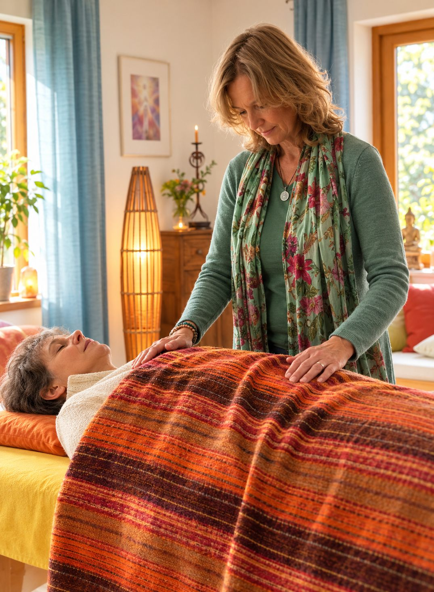

Fernreiki
Ablauf und Inhalt sind wie bei einer Sitzung vor Ort. Du liegst zu Hause an einem ruhigen Ort. Im Anschluss besprechen wir, was sich gezeigt hat.
120 €eine Stunde, inklusive Vor- und Nachgespräch
Als ehemalige Physiotherapeutin verbinde ich seit über 20 Jahren körpertherapeutische Erfahrung mit dem Kontakt zur geistigen Welt.
Unverbindliches Erstgespräch vereinbarenIn meinen Reiki-Behandlungen arbeite ich mit deinem Energiesystem: Ich nehme wahr, wo Energie stockt, und bringe sie wieder in Fluss.
In der Behandlung können wir deine Lebenssituation aus einer übergeordneten Sicht betrachten, um besser zu verstehen, warum du feststeckst. Mit den Impulsen aus der geistigen Welt kannst du dann Veränderung einleiten.
Meine Arbeit richtet sich an Menschen, die offen für eine energetische und spirituelle Betrachtung ihres Lebens sind und sich nach Veränderung sehnen.
„Wunderbar waren für mich die vielen konkreten und hilfreichen Anregungen, die ich selber in meinem Alltag umsetzen konnte.“
Antje
Reiki ist eine japanische Methode der Energiearbeit, die von Dr. Mikao Usui entwickelt wurde. „Rei“ bedeutet „universell“, „Ki“ bedeutet Lebensenergie. Nach dem Verständnis von Reiki ist diese Energie jedem zugänglich.
Während einer Behandlung kanalisiert die oder der Praktizierende diese Energie und gibt sie über die Hände weiter.

Viele Jahre arbeitete ich als Physiotherapeutin und begegnete täglich Menschen, die stark belastet waren. Mit der Zeit wurde mir bewusst, wie sehr Körper, Gefühle und Lebenssituation zusammenhängen. Die Begegnung mit Reiki hat meinen Blick auf den Menschen als Ganzes erweitert.
Heute begleite ich Menschen ganzheitlich – mit Ruhe, Achtsamkeit, Erfahrung und einem tiefen Vertrauen in die Fähigkeit des Menschen, wieder in Balance zu finden.
Ich bin im Dezember 1967 in Freiburg im Breisgau geboren. Von 1990 bis 2007 habe ich als Physiotherapeutin in Hamburg, Lübeck und Köln gearbeitet. Da mir der ganzheitliche Ansatz schon immer wichtig war, belegte ich Fortbildungen wie Shiatsu, Akupunktmassage nach Penzel, Osteopathie und Kinesiologie. 2004 begann ich mit der Reiki-Ausbildung, den Meister- und Lehrergrad erhielt ich 2006. Seit 2012 arbeite ich in eigener Praxis ausschließlich energetisch mit Reiki, nicht mehr physiotherapeutisch. Heute lebe ich mit meiner Familie in Staufen im Breisgau.
„Die Reiki-Begleitung von Catherine, der Rahmen, den sie zur Verfügung stellt, und die geerdete Spiritualität sind bei ihrer Arbeit eine Mischung, die unglaublich hilfreich und wohltuend ist.“
Anna
„Ein spiritueller Weg, der nicht in den Alltag führt, ist ein Irrweg.“
Pater Willigis Jäger, Benediktinermönch und Zen-MeisterAblauf und Inhalt sind wie bei einer Sitzung vor Ort. Du liegst zu Hause an einem ruhigen Ort und nimmst dir eine Stunde Zeit. Ich arbeite über die Ferne genauso wie vor Ort, ob zwischen uns dreißig Kilometer liegen oder sechshundert.
Während der Behandlung arbeite ich mit deinem Energiesystem und bringe stockende Energien wieder in Fluss. Zusätzlich empfange ich Bilder und Botschaften aus der geistigen Welt, die dich in deiner Lebenssituation unterstützen und dir Richtung geben können. Mit diesem neuen Verständnis kann Veränderung beginnen, und Klarheit, Kraft und innere Ruhe können entstehen.
Im kostenlosen Kennenlernen erzählst du mir, worum es geht. Danach vereinbaren wir eine Uhrzeit.
40 Minuten ungestört, liegend, angezogen, zugedeckt. Keine Technik, keine Videoschalte, kein Anruf.
In dieser Zeit arbeite ich mit deinem Energiesystem. Manche schlafen ein, manche spüren Wärme, manche spüren zunächst nichts.
was ich wahrgenommen habe und welche Bilder, Botschaften und alltagstauglichen Impulse sich für dich gezeigt haben. Dafür kannst du weitere 20–30 Minuten einrechnen.
Unverbindliches Erstgespräch vereinbaren„Egal ob man Catherine persönlich trifft oder mit ihr telefoniert, es geht die Sonne auf. Sie weiß und liebt, was sie tut, und das spürt man.“
Caroline
Ablauf und Inhalt sind wie bei einer Sitzung vor Ort. Du liegst zu Hause an einem ruhigen Ort. Im Anschluss besprechen wir, was sich gezeigt hat.
Im Vorgespräch klären wir dein Anliegen. Während der Behandlung arbeite ich mit deinem Energiesystem, mit dem Ziel, dass du zur Ruhe kommst und dich wieder mehr im Einklang fühlst. Zusätzlich empfange ich Bilder und Botschaften, die für dich wichtig und richtungsweisend sein können. Diese besprechen wir im Anschluss.
Wenn du das Gefühl hast, festzustecken, oder eine Entscheidung ansteht, bieten sich drei aufeinanderfolgende Behandlungstage an. Nach jeder Sitzung gibt es Anregungen, die du bis zum nächsten Tag umsetzt. So bauen die Tage aufeinander auf.
Diese Serie eignet sich für Menschen, die über längere Zeit stark gefordert sind – zum Beispiel in einer Trennungsphase, während sie einen Angehörigen beim Sterben begleiten, oder in anderen kräftezehrenden Lebensphasen. Du erhältst eine verlässliche, regelmäßige Begleitung.
Für Behandlungen vor Ort und über die Ferne, in frei wählbarer Höhe. Häufig sind es Angehörige, die jemandem eine Begleitung schenken möchten – gerade in Zeiten, in denen man sich selbst nichts gönnt.
Reiki ist eine spirituelle Energiearbeit und ersetzt keine ärztliche, heilpraktische oder psychotherapeutische Behandlung. Mehr dazu unter „Damit du weißt, woran du bist“.
„Bei Catherine schätze ich sehr, dass sie in ihren Behandlungen einen geschützten Raum schafft, in dem man auftanken und neue Kraft schöpfen kann.“
Jörg
In der Regel findet ein Vorgespräch statt. Du trägst bequeme Kleidung und liegst während der Behandlung. Meine Hände lege ich entweder direkt auf deinen Körper auf oder halte sie knapp darüber. Im Anschluss besprechen wir, was sich gezeigt hat.
Meine Praxis liegt im Hofmattenweg 6 in Staufen im Breisgau. Parken kannst du direkt in der Nähe, aus Freiburg sind es rund fünfundzwanzig Minuten.
Die Reiki-Ausbildung ist ein Weg zurück zu dir selbst. Altes darf losgelassen und Neues eingelassen werden.
Reiki steht für Licht, Liebe und Freiheit. Du lernst, mit lichtvollen Energien zu arbeiten, deine Selbstliebe zu stärken und emotionale Freiheit zu leben.
Damit genug Zeit und Raum für Fragen und Übung bleibt, besteht ein Seminar aus höchstens vier Teilnehmenden. Enthalten sind die Einzeleinweihungen, ein gedrucktes Skript, das Zertifikat sowie Vor- und Nachgespräche.
In allen Seminaren lehre ich nach dem traditionellen Usui-System („Usui-Methode des natürlichen Heilens“).
Du erhältst vier Einweihungen, die nach der Reiki-Lehre deinen Energiekanal öffnen und für die universelle Lebensenergie empfangsbereit machen. Danach kannst du Reiki bei dir und anderen anwenden. Zusätzlich gibt dir das Seminar Einblicke in die Geschichte von Reiki sowie in die Aura- und Chakra-Lehre. Viele erleben, dass ihre Anbindung, ihr Urvertrauen und ihre Intuition dadurch wachsen.
Voraussetzung ist eine Reiki-Behandlung vor Ort oder über die Ferne. Diese ist nicht in der Seminargebühr enthalten.
Du erhältst eine weitere Einweihung, die deine Arbeit mit Reiki vertieft. Du lernst die Symbole des zweiten Grades kennen, mit denen du Fernreiki geben sowie mit deinem inneren Kind und deiner Seele in Kontakt treten kannst. Außerdem lernst du die traditionellen Techniken der „Situationsbehandlung“ und der Mentaltechnik („Mentalheilung“), mit der du an alten Verhaltens- und Gedankenmustern arbeiten kannst.
Der zweite Grad ist ein weiterer Schritt in die Selbstermächtigung. Voraussetzung ist der erste Grad.
Der dritte Grad ist für diejenigen sinnvoll, die Reiki bereits in ihren Alltag integriert haben und das innere Bedürfnis verspüren, noch tiefer einzutauchen.
Der Meistergrad ist ein Einzelseminar, das auf dich und deine Bedürfnisse abgestimmt ist. Wir beginnen mit einer vorbereitenden Behandlung. Anschließend lernst du weitere Reiki-Techniken und erhältst das Meistersymbol, das in der Reiki-Tradition als das kraftvollste Symbol gilt. Die Einweihung selbst ist eine sehr persönliche und tiefgreifende Erfahrung.
Für all deine Fragen und die Wiederholung bereits erlernter Techniken nehmen wir uns ausgiebig Zeit.
Für alle, die schon bei mir gelernt haben und wieder üben, nachfragen oder tiefer gehen möchten. Termine nach Absprache.
„Ich bin unendlich dankbar, dass ich Catherine kennenlernen durfte. Die Reiki-Seminare mit ihr waren wundervoll und haben mein Leben bereichert.“
Cristina
Wenn du körperliche oder seelische Beschwerden hast, wende dich bitte an eine Ärztin oder einen Arzt. Eine laufende ärztliche oder therapeutische Behandlung solltest du wegen Reiki nicht unterbrechen oder absetzen.
Ich arbeite bereits seit unglaublichen 15 Jahren mit Catherine – sie hat mich durch sämtliche Lebensphasen, Umbrüche und Herausforderungen begleitet und mich immer professionell, konstruktiv, gut gelaunt und gelassen unterstützt. Ein Vorbild!
Ihren Reiki-Behandlungen und Einweihungsseminaren bis zum Lehrergrad habe ich viel zu verdanken. Viel Weiterentwicklung, viel Wachstum, viel Inspiration. Dabei hat sie mich immer ermutigt, meinen ureigenen Weg zu finden und zu gehen.
Ich schätze Catherine aber nicht nur als „Energie-Profi“ mit einem Erfahrungsschatz sondergleichen, sondern wegen ihrer authentischen und liebenswerten Art auch als Mensch und mittlerweile als Freundin. Danke für alles!
Schon beim ersten Kontakt mit Catherine stellte es sich für mich heraus, dass ich eine Energiearbeiterin getroffen hatte, die in ihrer ganzen Arbeit freundlich und voller Herzenswärme, klar und bewusst ist.
Ein spiritueller Mensch mit Bodenhaftung, Herz und vollem Kontakt zum Universum und das ohne Ausleben des eigenen Egos. Eine seltene Spezies.
Catherines Behandlungen bringen Klarheit, Ausgleich, Mut und Energie. Man geht gestärkt weiter auf seinem Weg. Ihre Ausbildungsarbeit für Reiki ist fundiert, strukturiert und sie ist eine hervorragende Lehrerin, die ihre Arbeit liebt und gewissenhaft ausführt.
Ich kenne Catherine seit 2011 und habe von ihr alle Reiki-Grade plus den Lehrergrad erhalten – dazu in den Jahren viele, viele Reiki-Sessions, immer wenn ich mit einem persönlichen Thema einfach nicht weiterkam.
Ich könnte mir keine bessere Reiki-Lehrerin vorstellen und ihre Reikisessions sind immer so aufschlussreich und hilfreich! Dazu liebe ich Catherines herzliche, ruhige, dezente und super professionelle Art der Arbeit, gepaart mit einer angenehmen Bodenständigkeit.
Und wenn es vielleicht übertrieben klingt (ist es aber nicht!): Ohne Reiki und Catherine wäre ich definitiv nicht der Mensch, der ich heute bin – wenn ich nicht all die Energie plus die wertvollen Botschaften der Geistigen Welt erhalten hätte, ergänzt durch Catherines großes Wissen, ihre Impulse, ihre liebevolle und authentische Art im Überbringen der Botschaften.
Wer sich in Reiki ausbilden lassen möchte oder eine Reiki-Session buchen möchte: Catherine ist von Herzen meine größte Empfehlung!
Was für ein Glück, dass wir Catherine Wünnenberg mit ihren Fähigkeiten kennengelernt haben. Sie begleitet unsere Familie nun schon seit einigen Jahren bei vielfältigen Fragen, Stationen und Entwicklungen.
Wir schätzen ihre heiter-gelassene Art bei gleichzeitig hoher Kompetenz und Professionalität. Sie verbindet Spiritualität, gesunden Menschenverstand und das Wissen um Psyche, Geist und Körper auf einzigartige Art und Weise. Zum großen Glück für ihre Klienten.
Herzlichen Dank für alle richtungsweisenden und erhellenden Behandlungen bisher, liebe Catherine.
Alle Stimmen auf dieser Seite stammen von Menschen, die ich selbst begleitet oder ausgebildet habe, und werden mit ihrer Zustimmung veröffentlicht. Sie geben persönliche Eindrücke wieder und sind kein Wirksamkeitsnachweis.
Manchmal braucht es einfach neuen Schwung, Klarheit und alltagstaugliche Impulse, um wieder ganz bei sich anzukommen. Wenn du spürst, dass es Zeit für Veränderung, Entlastung und neue Klarheit ist, begleite ich dich gern ein Stück auf deinem Weg.
Lass uns zuerst miteinander sprechen – kostenlos, unverbindlich, am Telefon.
Catherine Wünnenberg · Hofmattenweg 6 · 79219 Staufen im Breisgau
Telefon +49 160 33 968 33
E-Mail praxis@catherine-wuennenberg.de
Ein Impuls aus der Praxis, ein persönlicher Abschnitt und die nächsten Seminartermine.
Höchstens einmal im Monat. Abmeldung jederzeit über den Link in jedem Brief.